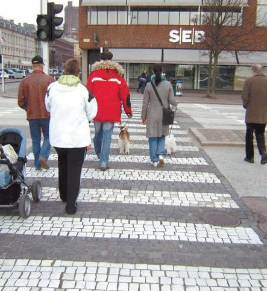
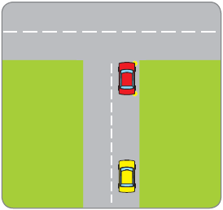
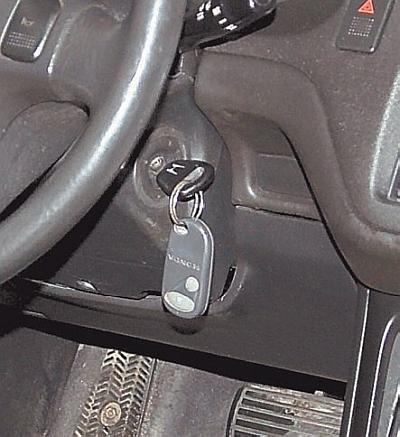

Что такое «эффективность управления автомобилем» .
Существует такое понятие, как эффективность управления механическим транспортным средством. Суть его заключается в том, чтобы быстро приехать в заданное место при максимальной безопасности и минимуме затрат на передвижение.
Основными критериями эффективности управления автомобилем являются: равномерность разгона, замедления и криволинейного движения, средняя скорость движения, расход топлива и др. В свете постоянно растущих цен на автомобильное топливо один из самых актуальных критериев – экономичность, то есть расход топлива на определенный пробег автомобиля.
Не секрет, что у опытных водителей автомобиль расходует намного меньше топлива, чем у тех, кто только недавно получил права и впервые сел за руль. Почему? В первую очередь потому, что опытные водители ездят намного спокойнее и равномернее, чем «чайники». Например, при движении в условиях плотного транспортного потока они придерживаются общего скоростного режима и набирают (снижают) скорость плавно.
ПРИМЕЧАНИЕ
Многие опытные водители почти не пользуются педалью тормоза. Вернее, они используют ее только для полной остановки автомобиля (в процессе снижения скорости она им не нужна), а также в экстренных случаях, когда необходимо срочно остановить автомобиль. Это достигается в первую очередь за счет умения правильно выбирать скорость, а также своевременно и адекватно оценивать дорожную обстановку.
Если нет необходимости форсировать движение, рекомендуется ехать на высоких передачах, не слишком уменьшая частоту вращения коленчатого вала. Учтите, что при ровном движении автомобиль использует почти всю свою мощность лишь для преодоления сопротивления встречного воздуха и дороги.
Многие водители неграмотно выполняют такой, казалось бы, несложный маневр, как остановка перед перекрестком на запрещающий сигнал светофора или регулировщика. Ошибка заключается в том, что они едут на относительно высокой скорости и резко тормозят уже перед самым перекрестком. Чем же это может быть чревато?
Главная опасность таких действий заключается в том, что следующий позади автомобиль не успеет вовремя остановиться и обязательно ударит любителя резких торможений. Конечно, известное правило «всегда виноват задний» никто не отменял, однако в любом случае придется тратить время на оформление дорожно-транспортного происшествия, последующий ремонт, получение страховки и т. д. Нужны ли вам лишние проблемы? Тем более что сумма страховки не всегда покрывает реальную стоимость ремонта. Ну и, конечно, самое главное – в подобной аварии могут пострадать люди, причем не только находящиеся в автомобилях, но и пешеходы (от удара передний автомобиль может выехать на пешеходный переход и серьезно травмировать пешеходов) (рис. 1.8).

Рис. 1.8. Пешеходный переход – в любой стране мира место повышенной опасности
Следует отметить, что подобное резкое торможение является причиной быстрого износа тормозных колодок и тормозных дисков, а также деталей и механизмов подвески. Результаты многочисленных исследований убедительно свидетельствуют: у тех, кто ездит равномерно и спокойно, тормозные колодки и диски служат в два раза дольше, чем у любителей экстремального вождения. Кроме того, при таком торможении повышается износ шин.
Не стоит забывать, что даже на технически исправном автомобиле тормоза могут отказать: любая техника в любой момент может выйти из строя, причем нередко это происходит в самое неподходящее время. Нужно ли говорить, какие катастрофические последствия могут произойти, если автомобиль на полном ходу выедет на перекресток на запрещающий сигнал светофора или регулировщика! Пострадают не только пешеходы (им достанется больше всего), но и ни в чем не повинные водители и пассажиры других транспортных средств (рис. 1.9). Поэтому следует заранее определить, успеваете вы проехать перекресток на разрешающий сигнал светофора или нет. В последнем случае начинайте заблаговременно снижать скорость, причем делать это рекомендуется плавно и почти без использования педали тормоза – переходя на пониженные передачи или просто пустив автомобиль накатом (разумеется, если вы едете не под уклон). В такой ситуации вы подъедете к перекрестку на минимальной скорости и нужно будет лишь немного нажать педаль тормоза для полной остановки. Если, приближаясь к перекрестку, вы видите, что на светофоре горит запрещающий сигнал, уменьшите скорость движения: очень вероятно, что вы подъедете к перекрестку как раз в тот момент, когда на светофоре загорится зеленый свет и не нужно будет останавливаться.

Рис. 1.9. Если вовремя не начать торможение, может произойти заднее столкновение
Если на дороге, по которой вы двигаетесь, действует правило «зеленой волны», придерживайтесь рекомендуемой скорости, чтобы не приходилось лишний раз останавливаться на перекрестках. Это самым благоприятным образом скажется и на экономичности автомобиля, и на его техническом состоянии.
ПРИМЕЧАНИЕ
«Зеленая волна» – это способ организации дорожного движения, когда при движении по данной дороге с рекомендуемой скоростью водитель на всех перекрестках гарантированно попадает на зеленый свет. Этот способ является эффективным методом борьбы с дорожными пробками и используется во многих странах.
Большое значение с точки зрения эффективности управления механическим транспортным средством имеет умение водителя правильно ездить накатом, когда при выключенной передаче (то есть рычаг переключения передач находится в нейтральном положении) автомобиль едет по инерции. Ведущие колеса автомобиля при этом полностью отключены от двигателя, поэтому крутящий момент на них не передается.
ВНИМАНИЕ
Как известно, отключить двигатель от трансмиссии можно также, полностью выжав педаль сцепления. Однако ехать накатом с выжатым сцеплением категорически не рекомендуется – обязательно выключайте передачу и отпускайте педаль. В противном случае можно быстро вывести из строя механизм сцепления, что приведет к сложному и дорогостоящему ремонту.
Особое значение умение ездить накатом приобретает там, где требуются частые остановки или снижение скорости с последующим разгоном, а также при движении на дорогах, имеющих много подъемов и спусков.
Чем же так полезен накат? Дело в том, что при движении в данном режиме двигатель работает вхолостую и полностью отсутствует сила тяги. Это самый экономичный режим работы двигателя внутреннего сгорания, поэтому расход топлива в данном случае минимален. Конечно, при однократном использовании наката о серьезной экономии топлива речь не идет, но при регулярном его применении можно несколько повысить экономичность автомобиля.
Расскажу об одной распространенной ошибке, которую часто допускают водители, стремясь сэкономить топливо. Обычно это случается тогда, когда в баке осталось совсем мало топлива и необходимо всеми правдами и неправдами дотянуть до заправки. В таком случае водитель поступает следующим образом: он разгоняет автомобиль, а затем выключает зажигание, заглушив при этом двигатель. Машина движется накатом, двигатель не работает, поэтому топливо не расходуется. Создается иллюзия, что таким образом можно сэкономить немало горючего, однако на самом деле это не имеет ничего общего с реальностью.
Ведь после того как автомобиль начнет снижать скорость, его придется вновь разгонять. А именно при разгоне двигатель потребляет больше всего топлива, поскольку при этом работает на высоких оборотах! Таким образом, все (или почти все) сэкономленное горючее будет израсходовано на разгон. Следовательно, экономия будет настолько мизерная, что о ней не стоит даже говорить.
Кроме того, данный способ передвижения имеет свои опасности. Ведь почти в каждом современном автомобиле имеется встроенное противоугонное устройство, суть которого заключается в блокировании рулевого колеса. Кстати, для опытного угонщика это устройство не является серьезным препятствием. Зато если вы во время движения выключите зажигание, оно может сработать и вы никак не сможете изменить направление движения своей машины (рис. 1.10).

Рис. 1.10. Во время движения ключ замка должен находиться в рабочем положении
ПРИМЕЧАНИЕ
Встроенное противоугонное устройство в разных автомобилях срабатывает по-разному: иногда руль блокируется только после того как из замка зажигания будет вынут ключ, а иногда – уже после выключения зажигания.
Появление на проезжей части автомобиля с неработающим рулевым управлением может привести к серьезным последствиям. В лучшем случае вы съедете в кювет, в худшем – вас вынесет на полосу встречного движения, что приведет к лобовому столкновению, а в самом худшем – вы просто не сможете объехать неожиданно появившегося на проезжей части пешехода.
Не стоит также забывать, что гидравлический усилитель рулевого управления и вакуумный усилитель тормозов функционируют только при работающем двигателе. Если вы заглушите мотор, они работать перестанут, следовательно, придется прилагать намного больше усилий, чтобы повернуть или затормозить. Важнейшим элементом управления любого автомобиля является педаль газа. Умение правильно применять эту педаль (иначе говоря – грамотно использовать силу тяги) нередко позволяет выйти из многих неожиданно возникших сложных ситуаций. Дело в том, что при движении накатом возможность использования педали газа у водителя отсутствует: ведущие колеса полностью отключены от двигателя и включение передачи требует хоть и небольшого, но времени, а на дороге иногда каждая секунда дорога.
Для повышения силы тяги нужно вовремя увеличить частоту вращения коленчатого вала двигателя, при этом чем ниже включаемая передача, тем выше должны быть обороты. У опытных водителей указанный прием отработан до автоматизма (иногда они используют так называемую «перегазовку», благодаря которой повышается приемистость двигателя).
Поэтому, когда автомобиль движется накатом, водитель должен уметь максимально быстро включить требуемую передачу. Чтобы научиться безошибочно выполнять этот прием, придется потренироваться. Не следует забывать и о том, что при движении накатом автомобиль передвигается по инерции и если в это время выполнить экстренное торможение, то из-за неустойчивости он может стать неуправляемым.
На основании вышеизложенного сделаем вывод: экономия топлива – это, конечно, хорошо, но не стоит увлекаться, особенно если действия водителей, желающих топливо сэкономить, могут негативно сказаться на безопасности движения.